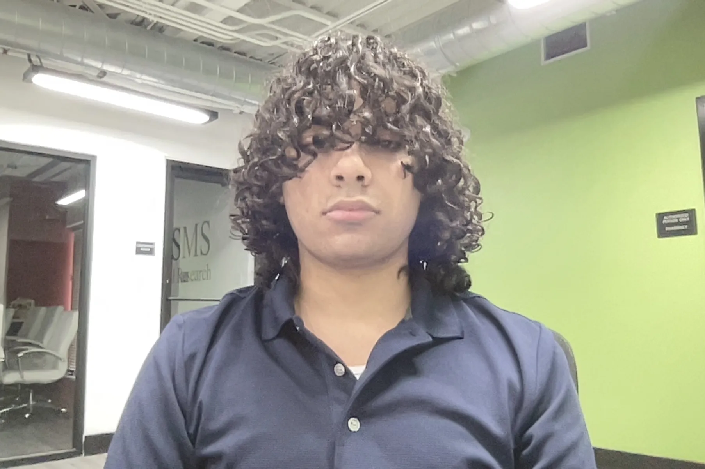

Ebaad Jaffery
Texas Chapter President
Hello I'm Ebaad Jaffery, the President of our Texas chapter. I'm passionate about bringing Hearts for Healing's mission to our local community and creating meaningful connections.
As chapter president, I oversee all our local initiatives, from hospital visits to community outreach programs. I believe that small acts of kindness can have a big impact on someone's healing journey.
When I'm not organizing chapter activities, you can find me volunteering at local hospitals or mentoring younger students interested in community service.